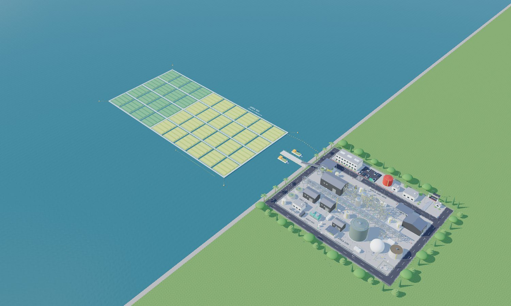

Tekanan Ekologis Waduk Cirata
430ha tutupan gulma akuatik6,94% dari 6.200 ha luas waduk
0,24mg/L total fosforTSI-P 83,18 (hipereutrofik)
2mg/L oksigen terlarutbeban N/P dari ±100.000 petak KJA dan DAS
Ecological Floating Bed dan Circular Multi-Feedstock Biorefinery untuk Waduk Cirata.
Menyiapkan halamanIntegrasi Ecological Floating Bed dan Circular Multi-Feedstock Biorefinery untuk Mitigasi Eutrofikasi dan Ketahanan Operasional PLTA Cirata
Di Waduk Cirata, akumulasi nitrogen dan fosfor memicu eutrofikasi serta pertumbuhan alga dan tumbuhan air secara berlebihan, hingga mengganggu operasi PLTA.
Panen ulang dengan ekskavator dan biomassa terpanen belum diolah menjadi produk bernilai.
Penelusuran tapak dari Waduk Cirata dan EFB 2 ha hingga biorefinery D200. Pilih area, klik alat untuk data desain, atau aktifkan kelompok aliran untuk melihat laju dan ukuran pipa.

Tujuh layar HMI diturunkan dari PFD Area 100–700. Klik unit untuk faceplate, klik nomor aliran untuk laju, T, P, dan DN. Mode SIMULASI menjalankan derau, Start/Stop unit, gangguan, dan alarm.
Model arus kas 20 tahun dihitung ulang setiap kali input berubah. Basis model mereplikasi analisis sensitivitas full report (selisih ≤ 0,06).
EFB ditempatkan sebagai sabuk hijau di hulu trash boom, di jalur air menuju intake: menyaring nutrien, meredam arus, dan memperlambat pertumbuhan ulang eceng gondok di area paling kritis bagi PLTA.
Enam tahap yang mengubah gulma waduk menjadi energi, produk, dan pupuk. Arahkan kursor atau ketuk tahap untuk penjelasan.